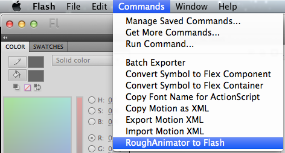

Run the extension from the Commands menu in Flash.

Select the "data.txt" file inside your project folder.
(On Mac, if the RoughAnimator project appears as a single file and is grayed out, changing the extension will make Animate recognize it as a folder so you can open it. Just take the "a" off the end so it's ".r" and then you can change it back to ".ra" after this is finished.)
Choose whether to convert the bitmap images to vector shapes.
Wait a bit while Flash imports the images, and then... ta da!
How to export from Adobe Flash/Animate to a RoughAnimator project:
This will only export the keyframes on the main stage - any additional animation inside symbols during a held frame will be lost. Tweens are converted to keyframes.
If there is a layer that contains only an audio file, the audio will be included in the export.
With your Flash project open, run the extension from the Commands menu in Flash.
Choose where to save the exported RoughAnimator project.
Make sure that the width/height matches your project, and that "Full Document Size" and "24 bit with alpha channel" (in Animate CC, "32 bit") are selected.
Wait for the export to finish.
If you need to transfer the newly created project to your mobile device:
On iOS: Projects are in the RoughAnimator app's documents folder, accessible through iTunes on your desktop.
On Android: Projects are in a "RoughAnimator" folder in your Android device's external storage.
Ta da!
How to import a RoughAnimator project to After Effects:
If you need to transfer the project from your mobile device to your computer:
On iOS: Projects are in the RoughAnimator app's documents folder, accessible through iTunes on your desktop.
On Android: Projects are in a "RoughAnimator" folder in your Android device's external storage.
Download this After Effects script (right click & save as) and place it in your After Effects scripts folder.
Run the script from the File > Scripts menu in After Effects.
Select the project folder; OR if you are unable to select the folder itself, select the "data.txt" file inside.
Ta da!
How to import a RoughAnimator project to Toon Boom Harmony:
If you need to transfer the project from your mobile device to your computer:
On iOS: Projects are in the RoughAnimator app's documents folder, accessible through iTunes on your desktop.
On Android: Projects are in a "RoughAnimator" folder in your Android device's external storage.
Download this Harmony script (right click & save as) and import it in Harmony's Script Editor window.
Create a new scene with the same size/framerate as your RoughAnimator project.
Run the script.
Select the project folder; OR if you are unable to select the folder itself, select the "data.txt" file inside.
Wait a bit while Harmony imports the images, and then... ta da!